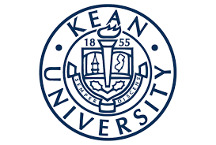

I attended Hunterdon Central Regional Highschool from 2014-2018 and Hunterdon County Polytech from 2016-2018. I took a Green Energy and Building class where I learned about renewable energy such as solar, wind, hydrogen, and water. I also recieved certifications in home theatre installation and smart home installation. During the Summer and on breaks I work as a residential electrician. Currently I am in my fourth year as an Information Technology student at Kean University.
